MyHeatManager 튜토리얼
이 튜토리얼은 시작 화면부터 모델 그리기, 해석, 결과 읽기까지 MyHeatManager 를 실제 화면으로 따라갑니다. 같은 단계가 프로그램 안에서도 실행됩니다 — 도움말 › 튜토리얼 (또는 시작 화면의 튜토리얼 시작) 을 누르면 오른쪽 아래 카드의 이전 / 다음, 자동 재생, 장 목록으로 화면이 직접 움직입니다.
차례
- 시작 화면
- 화면 둘러보기
- 모델 그리기
- 재료
- 열원과 경계 조건
- 해석
- 결과 보기
- 고급 해석
- SimScale 방식 해석
- 신뢰성 · U-값 · 히트맵
- 파일과 출력
- 꾸미기
1. 시작 화면
1. 환영합니다
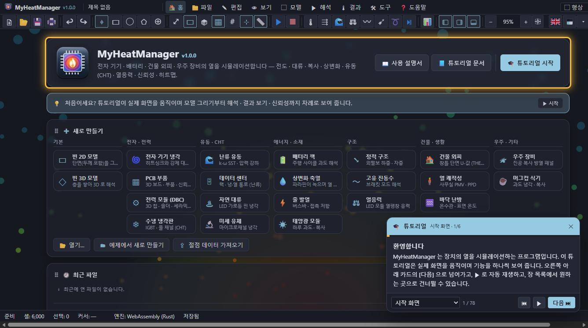
MyHeatManager 는 장치의 열을 시뮬레이션하는 프로그램입니다. 이 튜토리얼은 실제 화면을 움직이며 기능을 하나씩 보여 줍니다. 오른쪽 아래 카드의 [다음] 으로 넘어가고, ▶ 로 자동 재생하고, 장 목록에서 원하는 곳으로 건너뛸 수 있습니다.
2. 새로 만들기
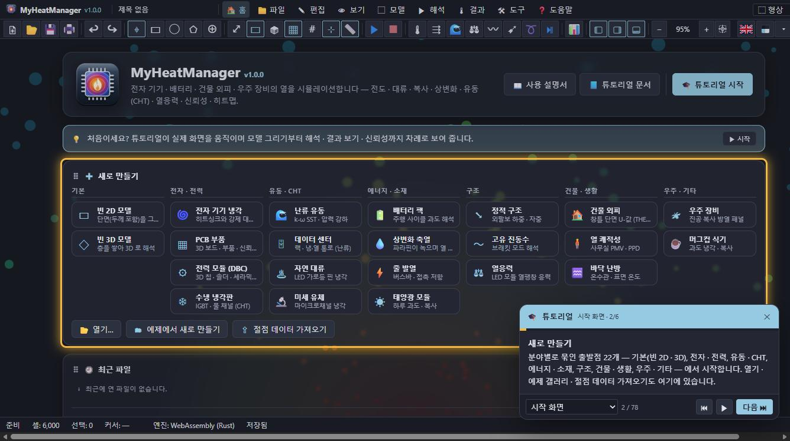
분야별로 묶인 출발점 22개 — 기본(빈 2D · 3D), 전자 · 전력, 유동 · CHT, 에너지 · 소재, 구조, 건물 · 생활, 우주 · 기타 — 에서 시작합니다. 열기 · 예제 갤러리 · 절점 데이터 가져오기도 여기에 있습니다.
3. 최근 파일과 도움말
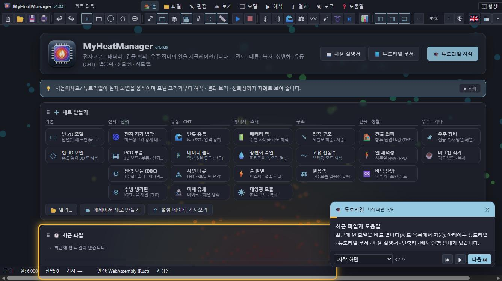
최근에 연 모델을 바로 엽니다(✕ 로 목록에서 지움). 아래에는 튜토리얼 · 튜토리얼 문서 · 사용 설명서 · 단축키 · 배치 실행 안내가 있습니다.
4. 예제와 배경
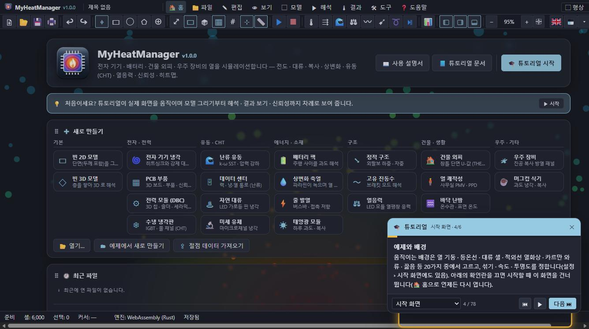
움직이는 배경은 열 기둥 · 등온선 · 대류 셀 · 적외선 열화상 · 카르만 와류 · 끓음 등 20가지 중에서 고르고, 섞기 · 속도 · 투명도를 정합니다(설정 › 시작 화면에도 있음). 아래의 확인란을 끄면 시작할 때 이 화면을 건너뜁니다(🏠 홈으로 언제든 다시 엽니다).
5. 카드 옮기기와 크기
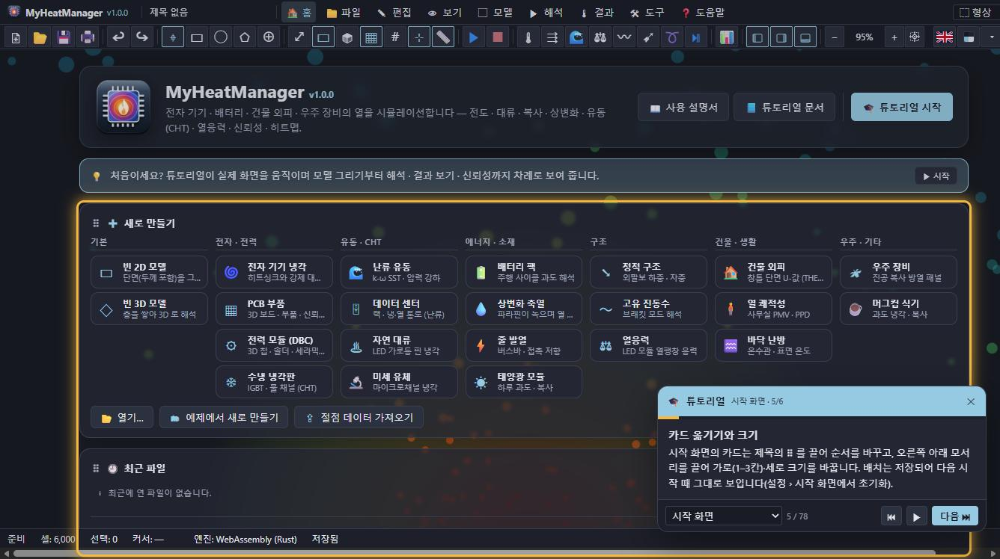
시작 화면의 카드는 제목의 ⠿ 를 끌어 순서를 바꾸고, 오른쪽 아래 모서리를 끌어 가로(1–3칸)·세로 크기를 바꿉니다. 배치는 저장되어 다음 시작 때 그대로 보입니다(설정 › 시작 화면에서 초기화).
6. 예제 구역
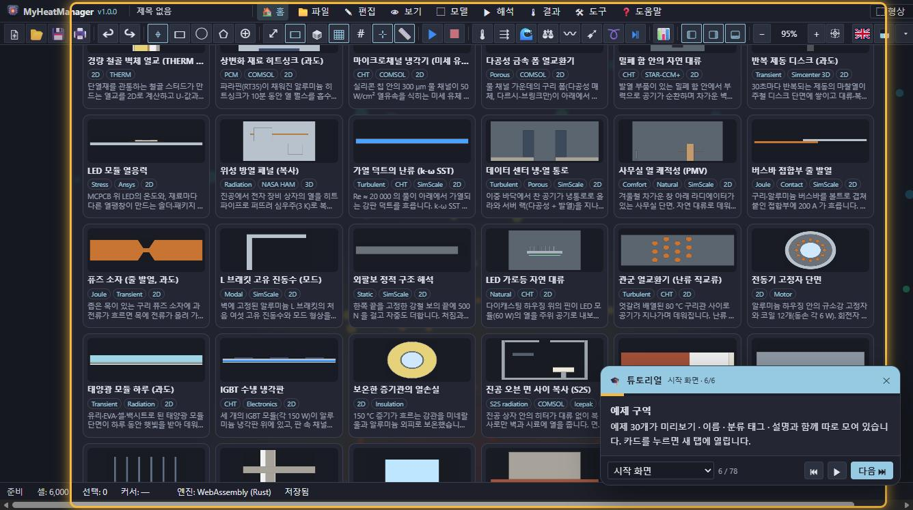
예제 30개가 미리보기 · 이름 · 분류 태그 · 설명과 함께 따로 모여 있습니다. 카드를 누르면 새 탭에 열립니다.
2. 화면 둘러보기
7. 튜토리얼 예제
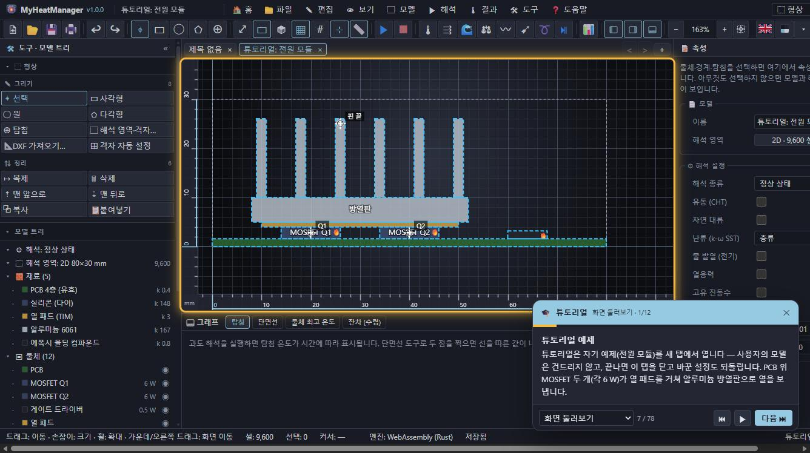
튜토리얼은 자기 예제(전원 모듈)를 새 탭에서 엽니다 — 사용자의 모델은 건드리지 않고, 끝나면 이 탭을 닫고 바꾼 설정도 되돌립니다. PCB 위 MOSFET 두 개(각 6 W)가 열 패드를 거쳐 알루미늄 방열판으로 열을 보냅니다.
8. 메뉴 막대
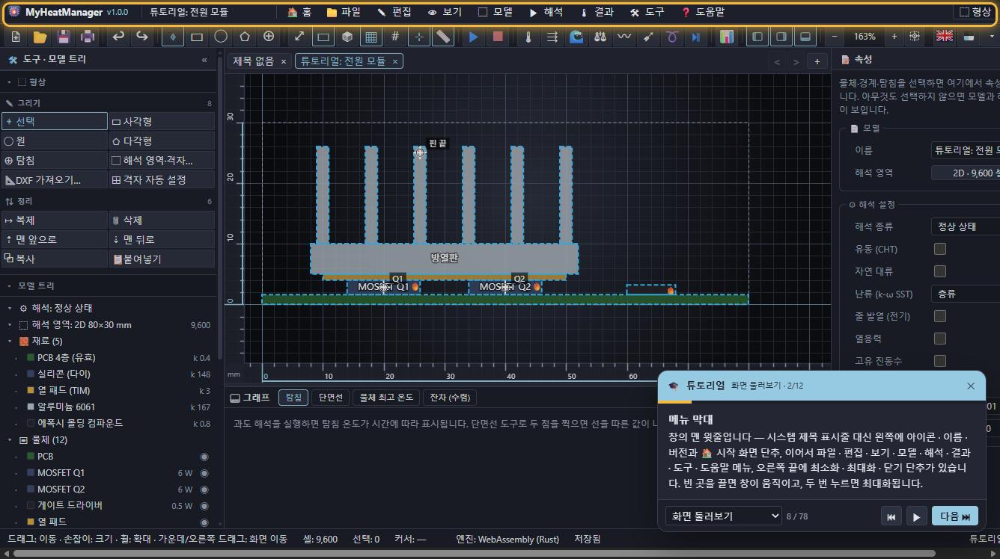
창의 맨 윗줄입니다 — 시스템 제목 표시줄 대신 왼쪽에 아이콘 · 이름 · 버전과 🏠 시작 화면 단추, 이어서 파일 · 편집 · 보기 · 모델 · 해석 · 결과 · 도구 · 도움말 메뉴, 오른쪽 끝에 최소화 · 최대화 · 닫기 단추가 있습니다. 빈 곳을 끌면 창이 움직이고, 두 번 누르면 최대화됩니다.
9. 작업대
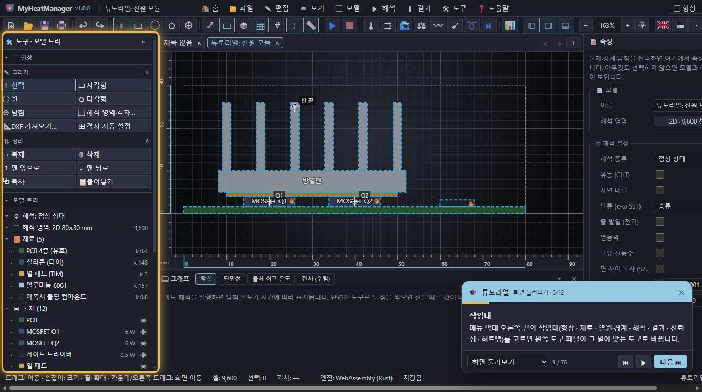
메뉴 막대 오른쪽 끝의 작업대(형상 · 재료 · 열원·경계 · 해석 · 결과 · 신뢰성 · 히트맵)를 고르면 왼쪽 도구 패널이 그 일에 맞는 도구로 바뀝니다.
10. 도구 모음
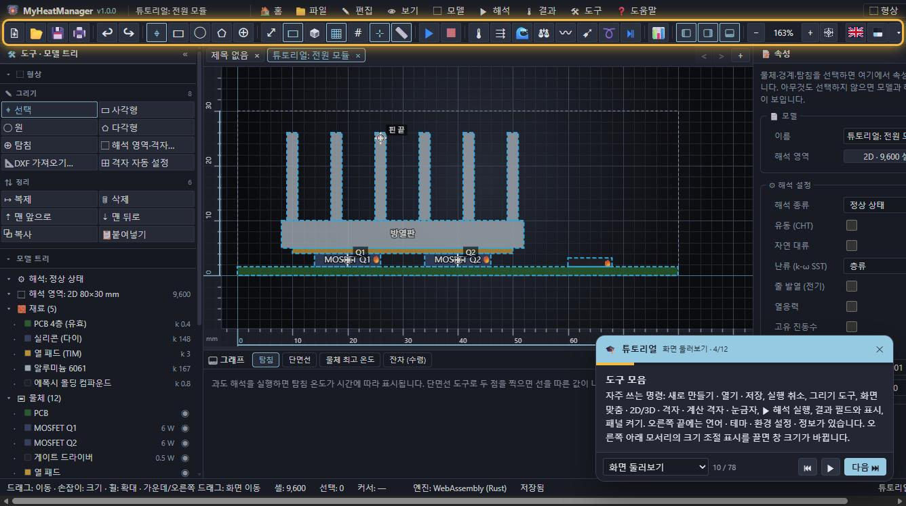
자주 쓰는 명령: 새로 만들기 · 열기 · 저장, 실행 취소, 그리기 도구, 화면 맞춤 · 2D/3D · 격자 · 계산 격자 · 눈금자, ▶ 해석 실행, 결과 필드와 표시, 패널 켜기. 오른쪽 끝에는 언어 · 테마 · 환경 설정 · 정보가 있습니다. 오른쪽 아래 모서리의 크기 조절 표시를 끌면 창 크기가 바뀝니다.
11. 원위치
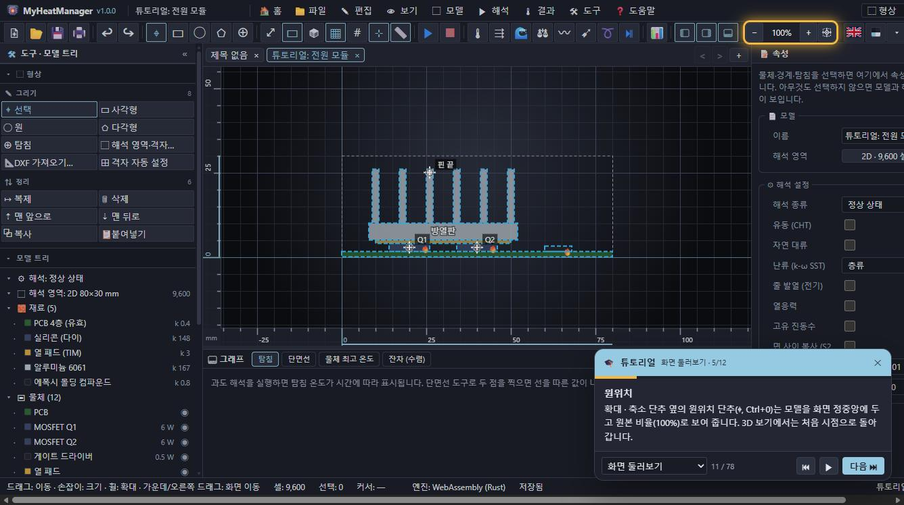
확대 · 축소 단추 옆의 원위치 단추(⌖, Ctrl+0)는 모델을 화면 정중앙에 두고 원본 비율(100%)로 보여 줍니다. 3D 보기에서는 처음 시점으로 돌아갑니다.
12. 모델 트리
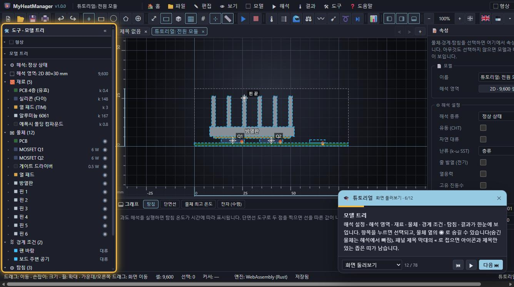
해석 설정 · 해석 영역 · 재료 · 물체 · 경계 조건 · 탐침 · 결과가 한눈에 보입니다. 항목을 누르면 선택되고, 물체 옆의 ◉ 로 숨길 수 있습니다(숨긴 물체는 해석에서 빠짐). 패널 제목 막대의 « 로 접으면 아이콘과 제목만 있는 좁은 띠가 남습니다.
13. 속성 패널
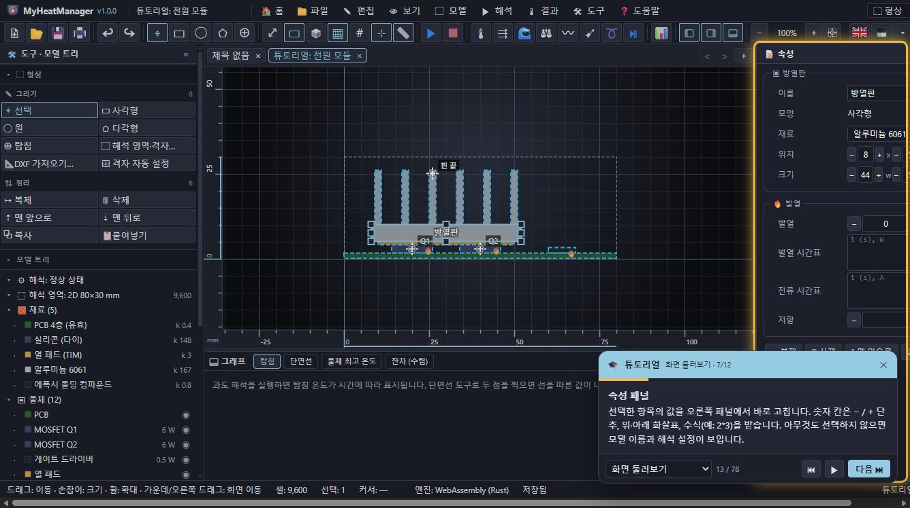
선택한 항목의 값을 오른쪽 패널에서 바로 고칩니다. 숫자 칸은 − / + 단추, 위·아래 화살표, 수식(예: 2*3)을 받습니다. 아무것도 선택하지 않으면 모델 이름과 해석 설정이 보입니다.
14. 상태 표시줄
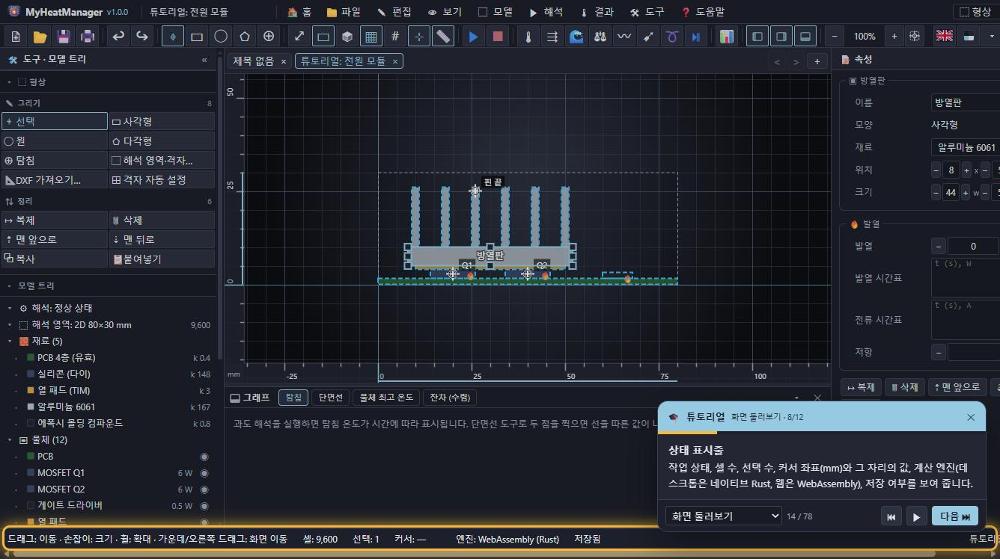
작업 상태, 셀 수, 선택 수, 커서 좌표(mm)와 그 자리의 값, 계산 엔진(데스크톱은 네이티브 Rust, 웹은 WebAssembly), 저장 여부를 보여 줍니다.
15. 패널 접기와 펼치기
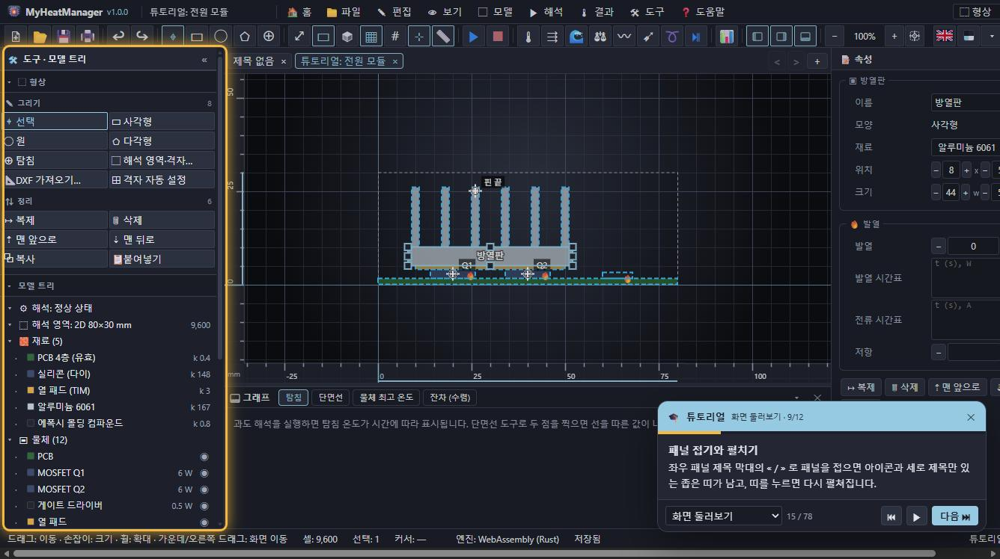
좌우 패널 제목 막대의 « / » 로 패널을 접으면 아이콘과 세로 제목만 있는 좁은 띠가 남고, 띠를 누르면 다시 펼쳐집니다.
16. 격자 · 계산 격자 · 눈금자
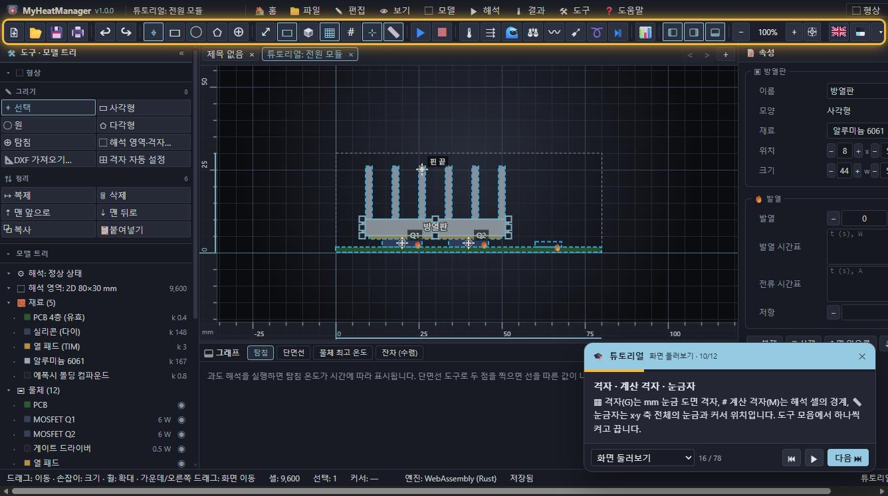
▦ 격자(G)는 mm 눈금 도면 격자, # 계산 격자(M)는 해석 셀의 경계, 📏 눈금자는 x·y 축 전체의 눈금과 커서 위치입니다. 도구 모음에서 하나씩 켜고 끕니다.
17. 오른쪽 단추 메뉴
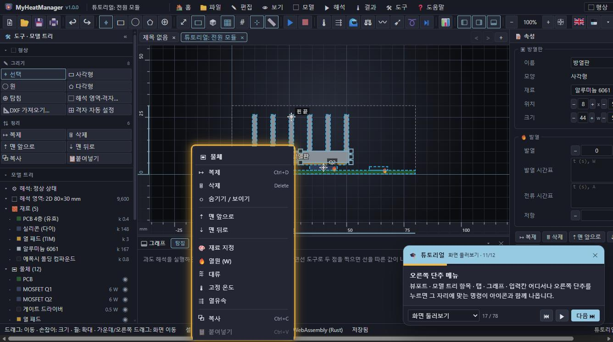
뷰포트 · 모델 트리 항목 · 탭 · 그래프 · 입력칸 어디서나 오른쪽 단추를 누르면 그 자리에 맞는 명령이 아이콘과 함께 나옵니다.
18. 탭과 < > 이동
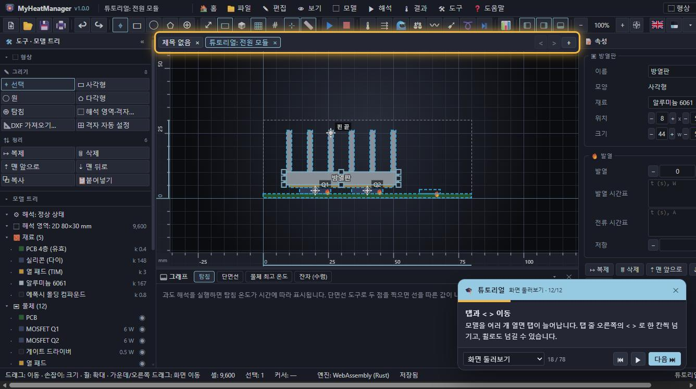
모델을 여러 개 열면 탭이 늘어납니다. 탭 줄 오른쪽의 < > 로 한 칸씩 넘기고, 휠로도 넘길 수 있습니다.
3. 모델 그리기
19. 해석 영역과 격자
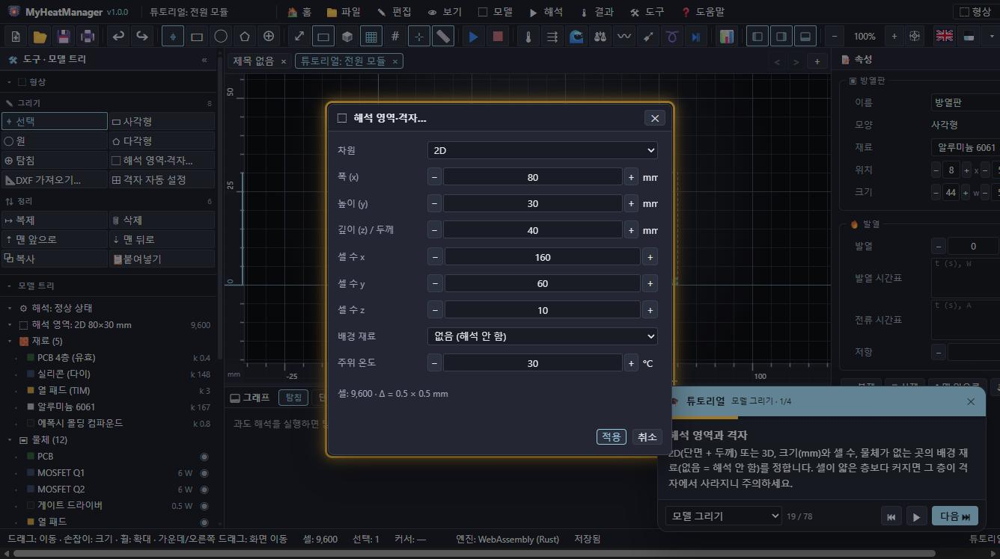
2D(단면 + 두께) 또는 3D, 크기(mm)와 셀 수, 물체가 없는 곳의 배경 재료(없음 = 해석 안 함)를 정합니다. 셀이 얇은 층보다 커지면 그 층이 격자에서 사라지니 주의하세요.
20. 사각형 그리기
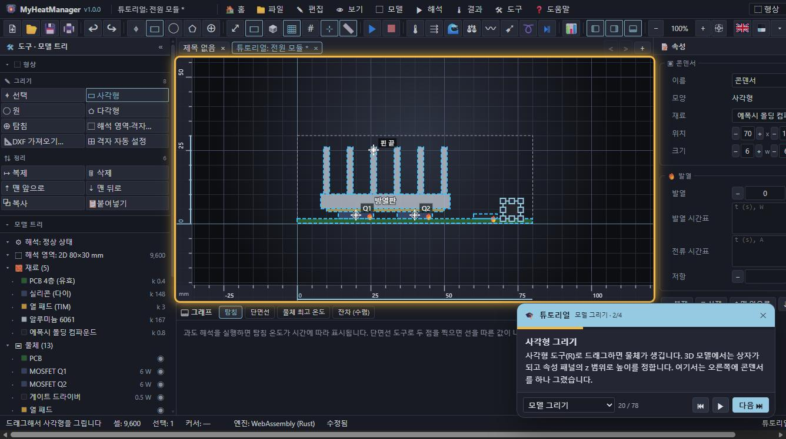
사각형 도구(R)로 드래그하면 물체가 생깁니다. 3D 모델에서는 상자가 되고 속성 패널의 z 범위로 높이를 정합니다. 여기서는 오른쪽에 콘덴서를 하나 그렸습니다.
21. 원과 다각형
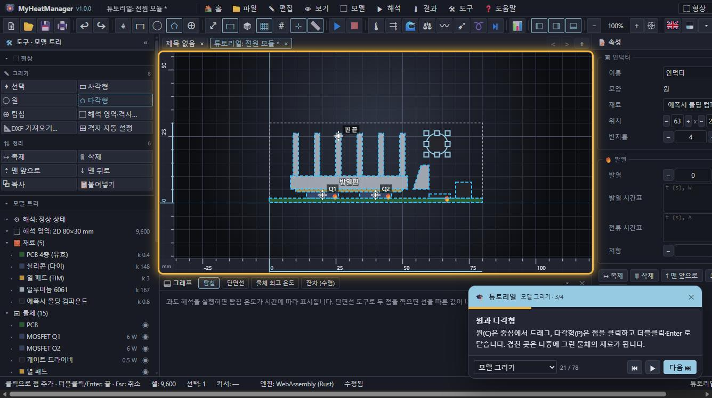
원(C)은 중심에서 드래그, 다각형(P)은 점을 클릭하고 더블클릭·Enter 로 닫습니다. 겹친 곳은 나중에 그린 물체의 재료가 됩니다.
22. 이동 · 크기 · 순서
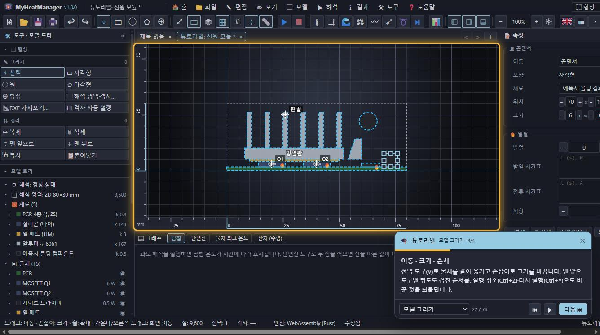
선택 도구(V)로 물체를 끌어 옮기고 손잡이로 크기를 바꿉니다. 맨 앞으로 / 맨 뒤로로 겹친 순서를, 실행 취소(Ctrl+Z)·다시 실행(Ctrl+Y)으로 바꾼 것을 되돌립니다.
4. 재료
23. 재료 라이브러리
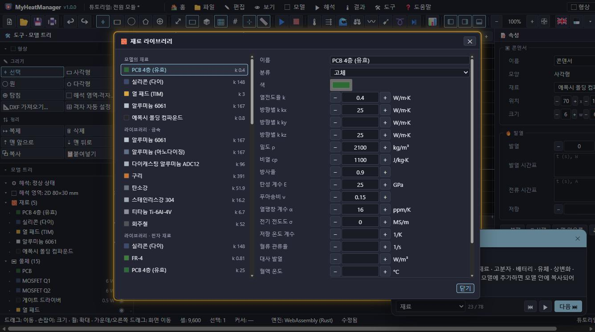
금속 · 전자 재료 · 세라믹 · 건축 재료 · 고분자 · 배터리 · 유체 · 상변화 · 다공성 매체 50가지가 있습니다. 모델에 추가하면 모델 안에 복사되어 파일만으로도 열립니다.
24. 재료 지정
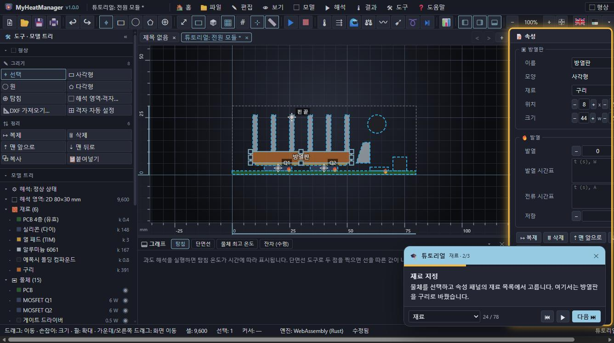
물체를 선택하고 속성 패널의 재료 목록에서 고릅니다. 여기서는 방열판을 구리로 바꿨습니다.
25. 재료 속성과 방향별 k
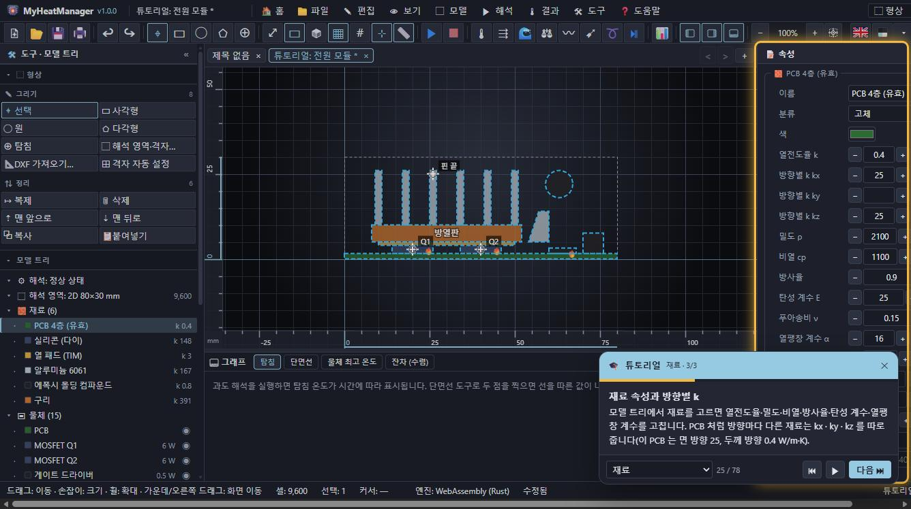
모델 트리에서 재료를 고르면 열전도율·밀도·비열·방사율·탄성 계수·열팽창 계수를 고칩니다. PCB 처럼 방향마다 다른 재료는 kx · ky · kz 를 따로 줍니다(이 PCB 는 면 방향 25, 두께 방향 0.4 W/m·K).
5. 열원과 경계 조건
26. 열원
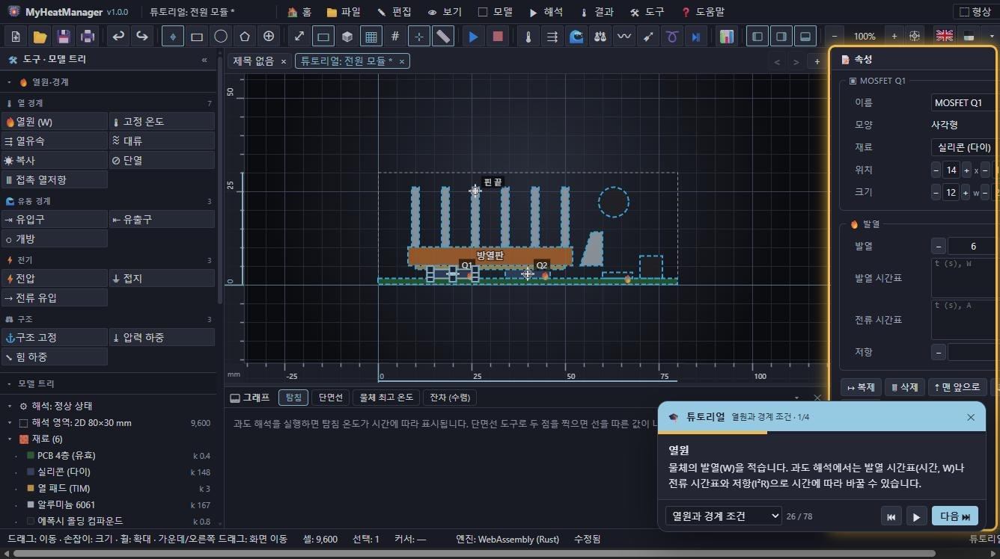
물체의 발열(W)을 적습니다. 과도 해석에서는 발열 시간표(시간, W)나 전류 시간표와 저항(I²R)으로 시간에 따라 바꿀 수 있습니다.
27. 경계 조건
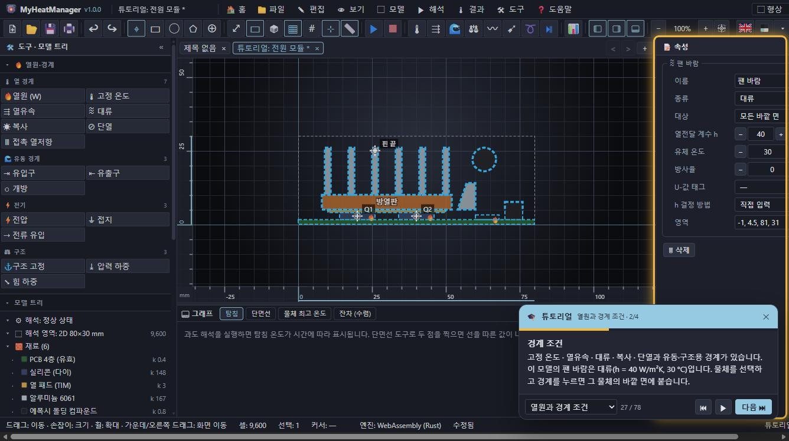
고정 온도 · 열유속 · 대류 · 복사 · 단열과 유동·구조용 경계가 있습니다. 이 모델의 팬 바람은 대류(h = 40 W/m²K, 30 °C)입니다. 물체를 선택하고 경계를 누르면 그 물체의 바깥 면에 붙습니다.
28. 경계의 대상과 영역
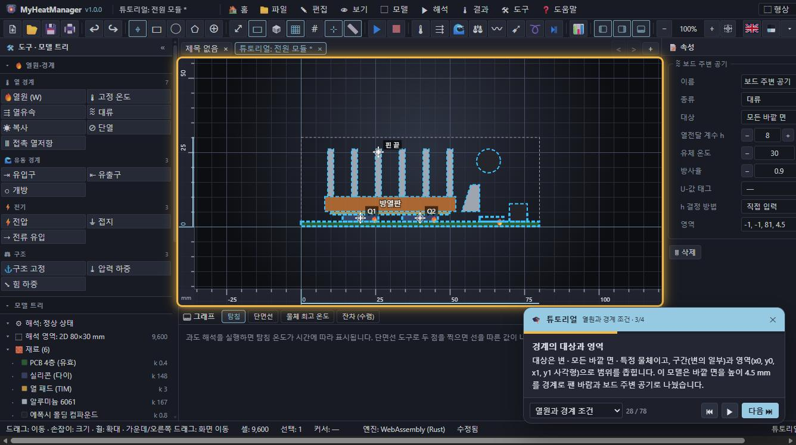
대상은 변 · 모든 바깥 면 · 특정 물체이고, 구간(변의 일부)과 영역(x0, y0, x1, y1 사각형)으로 범위를 좁힙니다. 이 모델은 바깥 면을 높이 4.5 mm 를 경계로 팬 바람과 보드 주변 공기로 나눴습니다.
29. 탐침
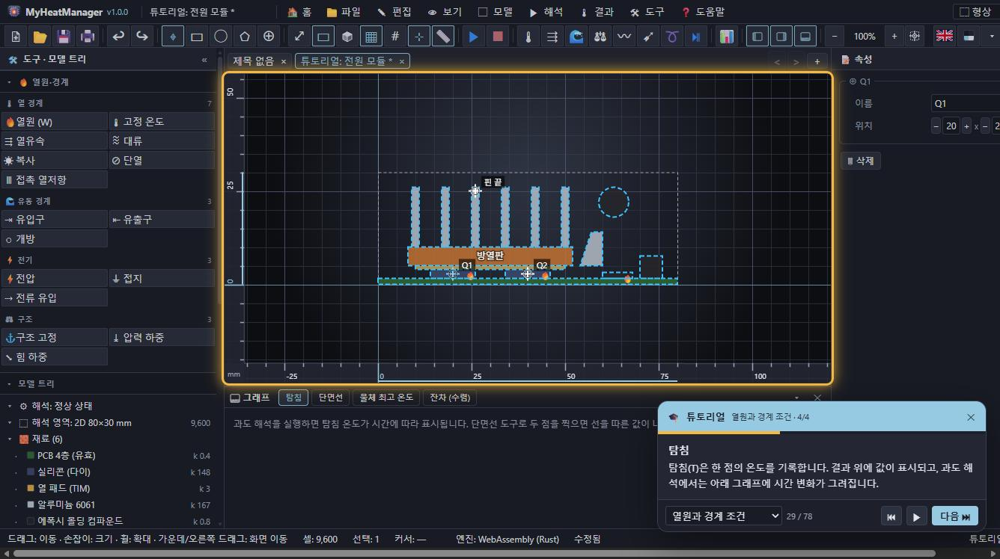
탐침(T)은 한 점의 온도를 기록합니다. 결과 위에 값이 표시되고, 과도 해석에서는 아래 그래프에 시간 변화가 그려집니다.
6. 해석
30. 해석 설정
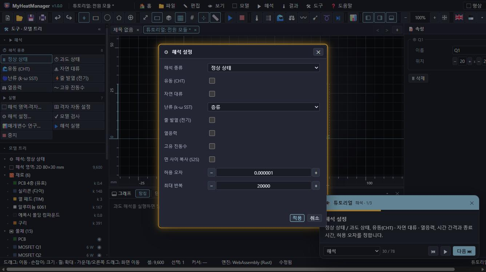
정상 상태 / 과도 상태, 유동(CHT) · 자연 대류 · 열응력, 시간 간격과 종료 시간, 허용 오차를 정합니다.
31. 모델 검사
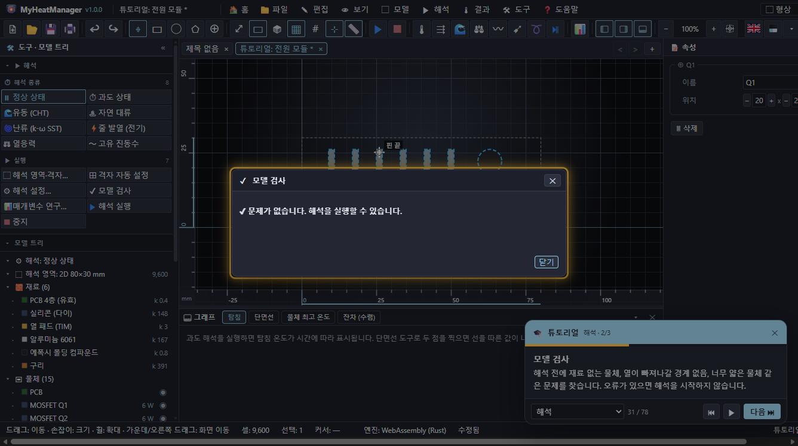
해석 전에 재료 없는 물체, 열이 빠져나갈 경계 없음, 너무 얇은 물체 같은 문제를 찾습니다. 오류가 있으면 해석을 시작하지 않습니다.
32. 해석 실행
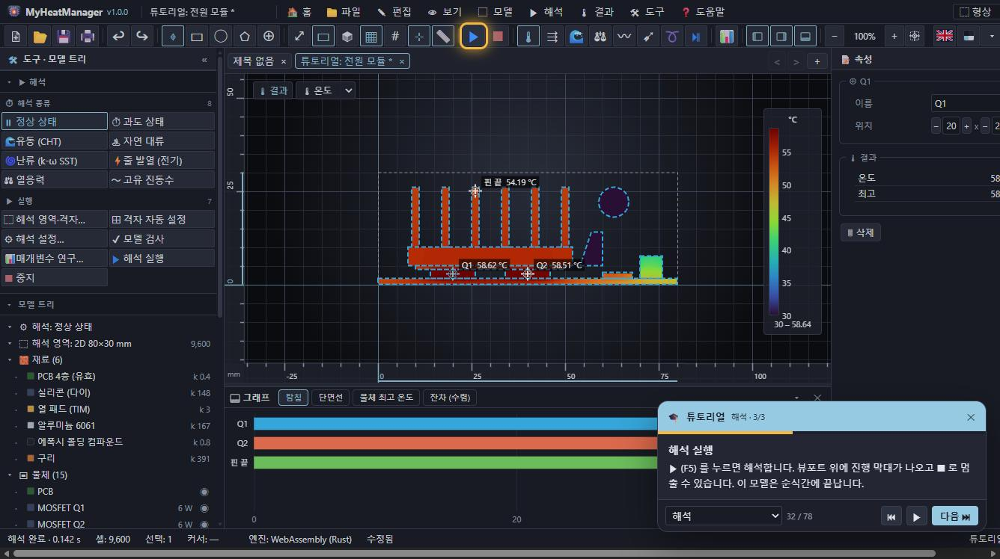
▶ (F5) 를 누르면 해석합니다. 뷰포트 위에 진행 막대가 나오고 ■ 로 멈출 수 있습니다. 이 모델은 순식간에 끝납니다.
7. 결과 보기
33. 온도 분포
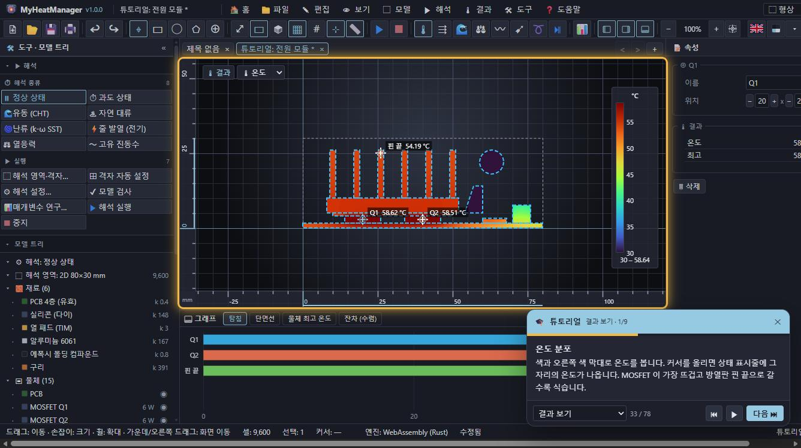
색과 오른쪽 색 막대로 온도를 봅니다. 커서를 올리면 상태 표시줄에 그 자리의 온도가 나옵니다. MOSFET 이 가장 뜨겁고 방열판 핀 끝으로 갈수록 식습니다.
34. 열유속과 벡터
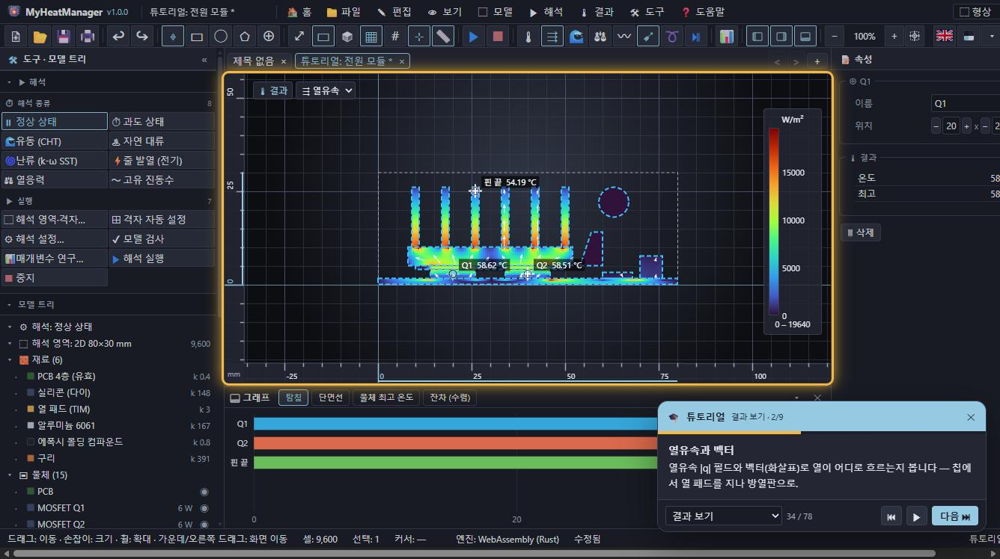
열유속 |q| 필드와 벡터(화살표)로 열이 어디로 흐르는지 봅니다 — 칩에서 열 패드를 지나 방열판으로.
35. 등온선
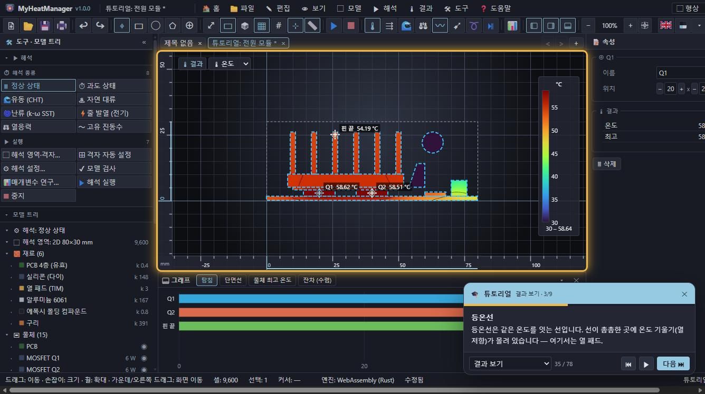
등온선은 같은 온도를 잇는 선입니다. 선이 촘촘한 곳에 온도 기울기(열저항)가 몰려 있습니다 — 여기서는 열 패드.
36. 단면선
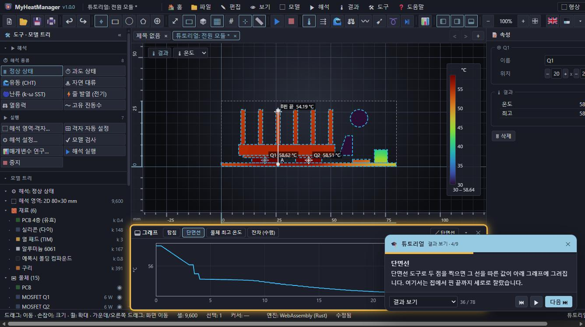
단면선 도구로 두 점을 찍으면 그 선을 따른 값이 아래 그래프에 그려집니다. 여기서는 칩에서 핀 끝까지 세로로 잘랐습니다.
37. 3D 보기
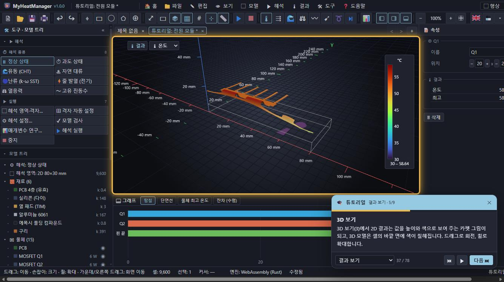
3D 보기(3)에서 2D 결과는 값을 높이와 색으로 보여 주는 카펫 그림이 되고, 3D 모델은 셀의 바깥 면에 색이 칠해집니다. 드래그로 회전, 휠로 확대합니다.
38. 3D 격자와 좌표축
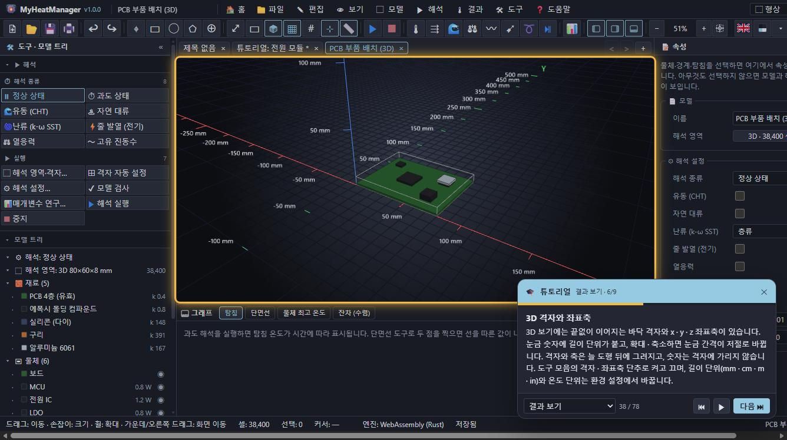
3D 보기에는 끝없이 이어지는 바닥 격자와 x · y · z 좌표축이 있습니다. 눈금 숫자에 길이 단위가 붙고, 확대 · 축소하면 눈금 간격이 저절로 바뀝니다. 격자와 축은 늘 도형 뒤에 그려지고, 숫자는 격자에 가리지 않습니다. 도구 모음의 격자 · 좌표축 단추로 켜고 끄며, 길이 단위(mm · cm · m · in)와 온도 단위는 환경 설정에서 바꿉니다.
39. 아래쪽 그래프 패널

아래쪽 그래프 패널의 제목 줄 오른쪽에서 ▾ 로 접고(제목 줄만 남음) ✕ 로 감춥니다. 도구 모음의 그래프 패널 단추로 다시 보입니다. 패널 위 경계를 끌어 높이를 바꿉니다.
40. 해석 보고서

물체별 최저·평균·최고 온도, 경계별 열량, 에너지 수지(발생 = 빠져나간 열), 계산 기록을 한 장으로 보고 HTML 로 저장하거나 인쇄합니다.
8. 고급 해석
41. 과도 해석과 애니메이션

상변화 재료 히트싱크 예제: 10분 동안의 열 펄스를 파라핀이 녹으며 흡수합니다. 프레임 슬라이더와 애니메이션(Space)으로 시간 변화를, 아래 그래프로 탐침 온도를 봅니다 — 녹는 동안 온도가 평평해지는 구간이 보입니다.
42. 유동과 연성 열전달 (CHT)

마이크로채널 예제: 실리콘 칩 속 물 채널의 유동과 칩의 열전도를 함께 풉니다. 속도 필드와 벡터로 유동을 봅니다.
43. 열응력

LED 모듈 예제: 재료마다 다른 열팽창으로 생기는 폰 미세스 응력과, 과장해서 그린 변형 형상을 봅니다.
9. SimScale 방식 해석
44. 난류 유동 (k-ω SST)

가열 덕트 예제: Re ≈ 20 000 의 물을 k-ω SST 난류 모델로 풉니다. 해석 설정의 난류 선택과 유입구의 난류 강도가 입력이고, 속도 · 난류 점성 필드와 유선으로 흐름을 봅니다.
45. 수렴 곡선

그래프 패널의 잔차 탭에 연속 · u · v · T · k · ω 잔차가 로그 눈금으로 그려집니다. 곡선이 충분히 내려가 평평해지면 수렴한 것입니다.
46. 유량과 압력 강하

유입 · 유출 경계를 고르면 속성 패널에 질량 유량 · 체적 유량 · 평균 압력 · 평균 온도가, 해석 보고서에는 압력 강하가 나옵니다.
47. 줄 발열 (전기)

버스바 예제: 400 A 전류 유입과 접지 경계, 재료의 전기 전도도로 전위장을 풀어 전류 밀도와 줄 발열을 구합니다. 전류가 몰리는 접합부가 가장 뜨겁습니다.
48. 접촉 열저항

두 물체가 닿은 면에 접촉 열저항(m²K/W)을 줍니다. 버스바의 볼트 접합면처럼 실제 접촉이 완전하지 않은 곳의 온도 차를 나타냅니다.
49. 정적 구조 해석

외팔보 예제: 고정단 · 끝 하중 500 N · 자중으로 변위와 응력을 구합니다(열팽창은 끔). 변형 형상을 켜면 처짐이 과장되어 보입니다.
50. 고유 진동수 (모드)

L 브래킷 예제: 처음 여섯 고유 진동수와 모드 형상입니다. 뷰포트 위의 모드 선택으로 형상을 바꿔 봅니다.
51. 열 쾌적성 (PMV)

사무실 예제: 자연 대류로 움직이는 공기의 온도 · 속도로 ISO 7730 PMV 를 계산합니다. 0 에 가까울수록 쾌적하고, 창가처럼 파란 곳은 춥게 느껴집니다.
52. 생체 열전달 (Pennes)

종양 고주파 소작 예제: 재료에 혈류 관류율 · 대사열 · 혈액 온도를 넣으면 Pennes 생체 열전달식으로 풉니다. 전극이 10분 동안 열을 내는 동안 종양 가장자리가 50 °C 를 넘는지 탐침 그래프로 봅니다.
53. 팬 곡선

팬 함체 예제의 팬 경계는 고정 유속 대신 팬 곡선(유량–압력)을 씁니다. 해석기는 팬 곡선과 함체의 저항이 만나는 운전점을 찾아 유량을 정하고, 그 공기로 부품 온도를 구합니다.
54. 매개변수 연구

값 하나(발열 · 열전달 계수 · 유입 속도 · 열전도율 · 격자 배율 …)를 범위 안에서 바꿔 가며 여러 번 풀고 결과를 표와 그래프로 비교합니다. 여기서는 팬의 열전달 계수에 따른 MOSFET 최고 온도입니다.
55. 격자 자동 설정

격자 자동 설정은 가장 얇은 물체가 셀 두 개 이상이 되도록 셀 수를 정합니다. 그 뒤 격자를 두 배로 해 다시 풀어 결과가 거의 같으면 충분히 촘촘한 것입니다.
10. 신뢰성 · U-값 · 히트맵
56. 신뢰성 (수명)

해석한 부품 온도로 아레니우스 MTTF · FIT 와 코핀-맨슨 솔더 피로 수명을 계산합니다. 시스템 수명과 5년 생존 확률도 나옵니다.
57. U-값 (건물 외피)

창틀 단면 예제의 열관류율 U, R-값, 선 열관류 L2D 를 실내·실외 대류 경계로부터 구합니다(THERM 방식).
58. 절점 데이터 히트맵

Thermal Desktop · SINDA 같은 절점 모델이나 열전대 측정값의 CSV 를 가져와 히트맵과 통계, 한계 온도 초과 절점을 봅니다.
59. 열분석 (DSC / TGA)

DSC 곡선의 피크를 기준선 위에서 적분해 잠열 · 시작 · 피크 · 끝 온도를 구하고, 인듐 같은 표준 물질로 보정한 뒤 상변화 재료로 모델에 넣습니다. TGA 에서는 감량 온도와 잔류량을 구합니다.
60. CalculiX · DXF

파일 메뉴의 CalculiX 내보내기는 격자 · 재료 · 경계 조건을 CalculiX 입력 파일(.inp)로 저장하고(FreeCAD · Gmsh · ParaView 워크플로), DXF 가져오기는 도면의 닫힌 폴리라인과 원을 물체로 가져옵니다.
61. 배치 실행 (API)

설치한 프로그램은 --batch 로 창 없이 여러 모델을 풀고 요약 JSON · CSV · 히트맵 PNG 를 씁니다. 스크립트나 CI 에서 설계안을 비교할 때 씁니다.
11. 파일과 출력
62. 저장

모델은 .myheat(JSON) 파일입니다. 저장(Ctrl+S), 다른 이름으로 저장(Ctrl+Shift+S). 웹판에서는 내려받기로 저장합니다.
63. 내보내기

파일 메뉴에서 결과를 CSV(셀 값) · PNG(화면) · VTK(ParaView) 로 내보내고, 보고서를 저장하거나 인쇄합니다.
64. 인쇄

도구 모음의 인쇄 단추(저장 오른쪽, Ctrl+P)는 인쇄 창을 엽니다. 왼쪽에서 용지 크기 · 방향 · 여백 · 인쇄할 내용(제목, 뷰포트 그림, 색 범례, 차트, 모델 표, 결과 요약, 해석 기록) · 머리글과 바닥글 · 컬러/흑백 · 글자 크기를 고르면 오른쪽 미리보기에 쪽마다 바로 나타납니다. 인쇄를 누르면 시스템 인쇄 창에서 프린터와 매수를 고릅니다.
65. 예제 갤러리

해석 종류와 분야마다 대표적인 예제 36개가 있습니다 — 미리보기와 설명을 보고 고릅니다.
12. 꾸미기
66. 테마

테마 단추를 누르면 다음 테마로, ▾ 를 누르면 어두운 20 · 밝은 20 테마가 색 띠(배경 · 패널 · 단추 · 강조 · 글자)와 이름의 두 줄로 펼쳐집니다.
67. 테마 목록

▾ 를 누르면 어두운 테마와 밝은 테마가 두 열로 내려옵니다. 테마마다 두 줄 — 색 띠와 이름 — 으로 보이고, 맨 아래에 사용자 정의 테마와 "사용자 정의 테마 설정…", "테마 설정…" 이 있어 설정 창의 그 탭으로 바로 갑니다.
68. 환경 설정

일반 · 테마 · 사용자 테마 · 글꼴 · 시작 화면 · 결과 표시 · 편집기 · 패널 · 파일 탭에 모든 설정이 있습니다. 바꾸는 즉시 적용되어 보이고, 적용 · 취소(열었을 때로) · Reset(기본값) 단추가 있습니다. 국기 단추는 한국어 ↔ English 를 바꾸며, 캔버스의 이름도 함께 바뀝니다.
69. 사용자 테마

설정 › 사용자 테마에서 기본 테마를 고른 뒤 배경 · 패널 · 강조 등 13가지 색을 바꿔 자신의 테마를 만듭니다. 바꾸는 즉시 화면에 보입니다.
70. 설명서 창

도움말 › 사용 설명서와 튜토리얼 문서는 별도의 창에서 열리고 앱 테마를 그대로 따릅니다. 테마를 바꾸면 열린 문서 창도 함께 바뀝니다.
71. 창 밖으로 나오는 창과 메뉴

데스크톱 판에서 대화 상자와 드롭다운 메뉴(메뉴 막대, 오른쪽 클릭, 테마 목록)는 각자의 창으로 열려 주 창 밖으로 나올 수 있습니다. 대화 상자가 열려 있는 동안 주 창은 어두워지고, 누르면 대화 상자가 앞으로 옵니다. 대화 상자의 제목 줄을 끌어 옮깁니다. 웹 판과 튜토리얼에서는 창 안에 그려집니다.
72. 끝

튜토리얼을 마쳤습니다! 바뀐 설정은 되돌리고 튜토리얼 탭은 닫습니다. 🏠 시작 화면이나 도움말 메뉴에서 언제든 다시 볼 수 있고, 튜토리얼 문서와 사용 설명서에 더 자세한 설명이 있습니다.
모든 기능의 자세한 설명은 사용 설명서 에 있습니다.
© SHKWON (knix008@naver.com)